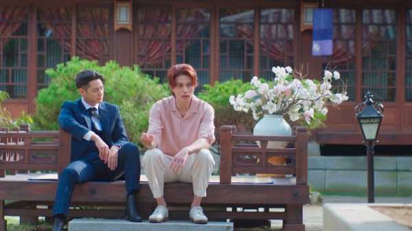

구미호뎐 1938
2023 | 15+ | 시즌2개 | 드라마 장르
1938년 혼돈의 시대에 불시착한 구미호가 현대로 돌아가기 위해 펼치는 K-판타지 액션 활극
주연 : 이동욱,김소연,김범
크리에이터 : 강신효,조남영
무제한으로 즐기세요
영상
| 구미호뎐 1938
예고편: 구미호뎐 1938
회차
| 구미호뎐 1938
구미호뎐 1938
공개일 : 2023
1938년 혼돈의 시대에 불시착한 구미호가 현대로 돌아가기 위해 펼치는 K-판타지 액션 활극
-
1화
75분1938 이랑 사망 4개월 후 이랑 환생을 조건으로 다시금 구미호의 힘을 돌려받은 이연. -

2화
74분아름다울 美 이랑을 깨우기 위해 천년 묵은 장수 거북이 동방삭과 위험천만한 도박으로 예정된 시간보다 한참 늦어 현세로 돌아가지 못한다 -
3화
77분새타니 해골 승려가 지키고 있는 인적 없는 암자, 법당 안에 부적이 잔뜩 붙은 '커단란 뒤주'가 잇고 그앞에 무영이 서있는데 -
4
73분업동이 묘연각 대문 앞, 낯선 대바구니 하나가 놓여있다. 바구니 속에서 방긋거리고 있는 것, 놀랍게도 '살아 숨 쉬는 아기'다! -
5화
69분묘연각 안, 기생들을 인질 삼아 아기를 노리는 형사들과 이연, 이랑이 대치하고 있다. -
6화
72분구석놀이 묘연각 지붕 위에 숨겨진 '붉은색 복주머니' 놓여있다. 멀찍이서 그것을 바라보는 시건! 무영이다. -
7화
66분장산범을 찾아 '삿된 자들의 길'로 들어온 이연과 무영은 정체 모를 연기에 붙잡힌다. -

8화
73분토착신들 장산범 소동으로부터 여러날이 흘렀다. 지난번 무영의 경고가 떠오르자 굳은 얼굴의 이랑.. 그대로 묘연각을 나선다. -
9화
64분반도호텔 지난 밤, 경성 시내 토착신들이 사라지고 죽었다! 묘연각에서는 이연과 홍주가 마주하고있다. -
10화
61분시니가미 용병단 반도호텔 404호 방 안 그림 속, 용병단의 우시우치보를 마주한 세 사람! 우시우치보가 시계를 본다! -
11화.2023.06.10
-
12화.2023.06.11
-
13.2023.06.17
-
14.2023.06.18
-
15.2023.06.24
-
16.2023.06.25
상세 정보
오프라인 시청
장르
시리즈 특징:
저장 기능은 광고 없는
멤버십에서만 이용 가능합니다.
멤버십에서만 이용 가능합니다.
호러 시리즈,판타지 시리즈,한국 드라마
무서운,달콤 쌉싸름,로맨틱
출연
이동욱
황희
황희
조보아
김용지
김용지
김범
김정난
안길강
함께 시청된 콘텐츠


공개 임박
메니페스트
사냥개들
바비의 인어 공주 이야기
레지던트 이불 2
리키줌
비행기가 착륙하니 세계는 불가사의하게도
이미 수년이 지나있고, 시간의 흐름이
캄승객들만 비껴간 것 같다. 도착한 승객들은
기이한 새로운 현실과 마주한다.
이미 수년이 지나있고, 시간의 흐름이
캄승객들만 비껴간 것 같다. 도착한 승객들은
기이한 새로운 현실과 마주한다.
두 청년 복서가 선한 대부업자와 한뜻으로
뭉친다. 돈 때문에 절박한 약자들을 먹잇감
삼는 악랄한 사채업자에 대적하기 위해.
뭉친다. 돈 때문에 절박한 약자들을 먹잇감
삼는 악랄한 사채업자에 대적하기 위해.
자신이 인어라는 사실을 알게 된 소녀 멀리아.
서핑 챔피언인 멀리아는 돌고래의 도움을 받아
오세아나의 여왕인 엄마를 구해야 한다!
서핑 챔피언인 멀리아는 돌고래의 도움을 받아
오세아나의 여왕인 엄마를 구해야 한다!
죽음의 바이러스가 확산되자 봉쇄에 들어간
라쿤 시티. 좀비와 함께 그곳에 갇힌 앨리스와
엘리트 군단은 새로운 악의 등장을 마주한다.
라쿤 시티. 좀비와 함께 그곳에 갇힌 앨리스와
엘리트 군단은 새로운 악의 등장을 마주한다.
리키 줌과 단짝 바이크 친구들이 바이크 마을
휠포드를 쌩쌩 달려요. 구조 임무도 해내고
빠르게 움직이는 스턴트도 배운답니다.
우리도 함께 신나게 달려볼까요!
휠포드를 쌩쌩 달려요. 구조 임무도 해내고
빠르게 움직이는 스턴트도 배운답니다.
우리도 함께 신나게 달려볼까요!
아놀드
러브 데스티나: 더 무비
뷰티풀 라이프
보디빌딩 챔피언부터 시작해 할리우드
아이콘을 거쳐 정치인이 되기까지, 아놀드
슈워제네거의 다각적인 삶과 커리어를 따라가는
내밀한 다큐시리즈.
아이콘을 거쳐 정치인이 되기까지, 아놀드
슈워제네거의 다각적인 삶과 커리어를 따라가는
내밀한 다큐시리즈.
다른 생에서 사랑했던 여인을 꿈에서 본 한
남자. 그녀를 다시 만나게 될 운명이라고
믿는다. 하지만 정체를 알 수 없는 시간 여행자가
나타나 그의 계획을 방해한다.
남자. 그녀를 다시 만나게 될 운명이라고
믿는다. 하지만 정체를 알 수 없는 시간 여행자가
나타나 그의 계획을 방해한다.
남다른 재능을 숨기고 살던 청년 어부가 어느
날 한 음악 프로듀서의 눈길을 끈다. 그의
앞에서 손짓하는 스타덤과 사랑. 그는 이 새로운
길에 뛰어들 준비가 되었을까?
날 한 음악 프로듀서의 눈길을 끈다. 그의
앞에서 손짓하는 스타덤과 사랑. 그는 이 새로운
길에 뛰어들 준비가 되었을까?